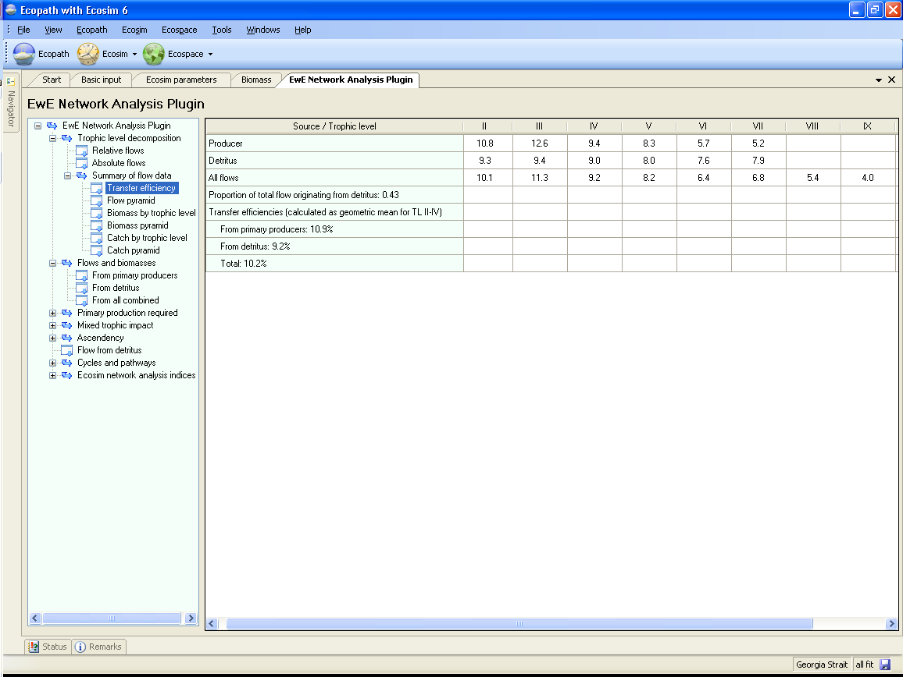

7.18 Summary of flow data
Transfer efficiency
Based on the trophic aggregation tables (see Flows and biomasses), the transfer efficiencies between successive discrete trophic levels can be calculated as the ratio between the sum of the exports from a given trophic level, plus the flow that is transferred from trophic level to the next, and the throughput on the trophic level. This is presented in a table with transfer efficiencies (%) by trophic levels (Figure 7.5).

Figure 7.5
Flow pyramid
The transfer efficiencies (see above) can be used for constructing a figure presenting the trophic flows in the form of a pyramid that can be produced by selecting the Flow pyramid menu item on the EwE Network Analysis Plugin menu (Trophic level decomposition > Summary of flow data > Flow pyramid). Here, the traditional two-dimensional Lindeman pyramids, consisting of a number of rectangles placed on top of each other, are replaced by a three-dimensional, Egyptian-style, solid pyramid.
These pyramids are drawn such that the volume of each compartment representing a trophic level is proportional to the total throughput of that level. In addition, to enable various comparisons, the top-angle of the pyramids was made inversely proportional to the geometric mean of the transfer efficiencies between trophic levels observed in the system.
The efficiency of detritus transfer is not defined. On the other hand, the outputs include the ratio of total flow originating from the detritus to the total flow originating from both primary producers and detritus. This ratio, which may be viewed as an index of the importance of detritus in a system, is the quantitative form of yet another of Odum's (1969) measures of ecosystem maturity. The index is complementary, i.e., it sums to 1 with the proportion of the total flow that originates from the primary producers.
Biomass by trophic level and Biomass pyramid
Biomass pyramids can be constructed based on biomasses by trophic level. For calculation of this the biomass of each group in the system is distributed onto trophic levels in proportion to the flows by trophic levels for the groups.
Catch by trophic level and Catch pyramid
Catch pyramids can be constructed based on catch by trophic level. For calculation of this the catch of each group in the system is distributed onto trophic levels in proportion to the flows by trophic levels for the groups.